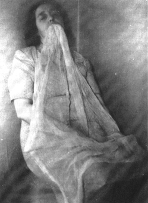

Tuesday, May the 22nd, 2007
back to: title, date or indexes
Unfortunately, Madame Boubou did not enclose a snapshot of her engulfment by ectoplasm with her Message From Beyond. As luck would have it, a trawl through the Hooting Yard Archives turned up this picture which enables lucky readers to see with their own eyes the amazing phenomenon of ectoplasmic hoo-ha:

According to The Minnie Harrison Page, what we see here is “ectoplasm emanating from the Medium's mouth. Taken in complete darkness using Kodak infra-red plate. Exposure by means of powerful ‘Sashalight’ bulb through ‘Wratten’ glass filter—extremely deep ruby-red colour. The Ectoplasm is emanating from her mouth and in this form it is quite transparent, very similar in appearance and texture to chiffon.”
Those of you who think Minnie Harrison is sitting there in her 1948 Middlesbrough sitting room with a net curtain stuffed in her mouth are sadly deluded and will not get a helping of Madame Boubou's delicious Boiled Rhubarb Surprise.